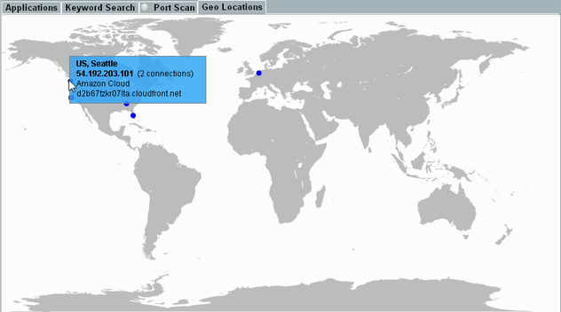

Geo Locations Tab
This tab allows you to analyze the locations of the servers addressed by the DUT. The locations are displayed as dots on a world map. Move your mouse over a location, to see connection information.

Geo Locations tab
The map considers all destinations for which the country and the city can be determined. Only destinations on the Internet are shown, not local destinations within the DAU.
The map shows a single dot for each city with destinations. A dot can be related to several destinations and to several connections per destination.
If you move your mouse over a dot, a popup lists information for all destinations in the city:
- Country and city
- IP address of the destination
- Number of connections to the destination
- Application
- FQDN of the destination